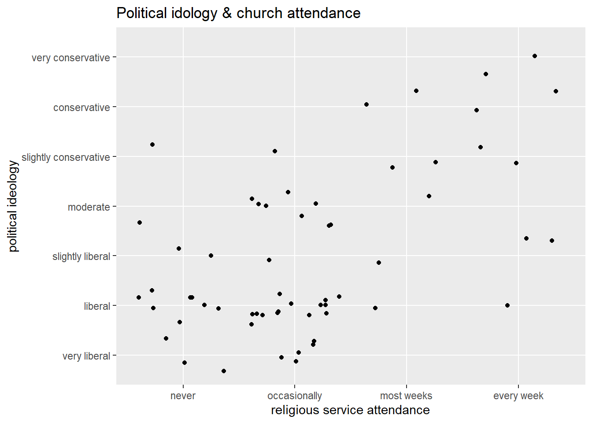

Code
library(tidyverse)
library(alr4)
library(smss)library(tidyverse)
library(alr4)
library(smss)This question examines the dependence of fertility on the gross national product per person (ppgdp) in US dollars from 2009.
The predictor variable is ppgdp and the response variable is fertility.
A scatterplot of these variables is shown below. It revels that woman tend to have less children as GDP increases.
A straight line function does not seem plausible for this graph as points are clustered primarily in one area. A linear regression line would therefore not be the best fit for the data.
ggplot(UN11, aes(x = ppgdp, y = fertility)) +
geom_point() +
labs(x = "Per capita gross domestic product in US dollars",
y = "Number of children per woman")
When log-log is used, a simple linear regression model does seem plausible to summarize this graph.
ggplot(UN11, aes(x = log(ppgdp), y = log(fertility))) +
geom_point() +
labs(x = "Log of per capita gross domestic product in US dollars",
y = "Log of number of children per woman")Question two asks if the slope of a prediction equation will change if the explanatory variable in converted from USD to GBP (a), and also if the correlation will change (b). One GBP is equal to about 1.33 USD in this example.
The slope of the equation will change because the explanatory variable is responsible for determining the slope.
The correlation will not change as correlation is not based on units.
Question 3 asks if water runoff in Southern California could be predicted from past data so that engineers, planners, and policy makers could do their job more efficiently. The below scatterplot examines 43 years worth of precipitation data taken at 6 sites in the Sierra Nevada mountatins and stream runoff volume (BSAAM) at a site near Bishop, CA.
pairs(water)
The scatterplot matrix shows a strong positive relationship between the amount of precipitation and stream runoff volume at 3 sites (OPBPC, OPRC, and OPSLAKE). The other sites appear to have a positive relationship, but not very strong. Year does not appear to be a strong predictor of precipitation or run-off volume.
Question four examines the relationship between 5 ratings on RateMyProfessors.com provided by students at a large campus in the Midwest of 364 instructors.
df4 <- Rateprof %>%
select(c(quality, helpfulness, clarity, easiness, raterInterest))
pairs(df4)
The above scatterplot matrix shows there is a strong positive relationship among the variables quality, helpfulness, and clarity. There is a weak positive correlation between easiness, quality, helpfulness, and clarity. Finally, there appears to be almost no relationship between raterInterest and the other variables.
Question five examines data provided by social science graduate students at the University of Florida enrolled in STA 6126. Two relationship will be examined:
outcome variable (y): political ideology (pi) explanatory variable (x): religiosity (re)
outcome variable (y): high school GPA (hi) explanatory variable (x): hours of TV watching (tv)
The below graph shows how the explanatory variable (religiosity) relates to the outcome variable (political ideology).
data("student.survey")
ggplot(student.survey, aes(x = re, y = pi)) +
geom_jitter() +
labs(title = "Political idology & church attendance",
x = "religious service attendance",
y = "political ideology") 
The plot reveals there is a weak positive correlation between how often a students attend religious services and how conservative they are.
The below graph shows how the explanatory variable (hours of TV watching) relates to the outcome variable (high school GPA).
ggplot(student.survey, aes(x = tv, y = hi)) +
geom_jitter() +
labs( title = "High school GPA & average weekly hours of TV",
x = "average hours of TV per week",
y = "high school GPA")Glancing at the plot there doesn’t appear to be much of a correlation. However, when looking at the summary of the regression below, p < .05 which indicates statistical significance. R-squared is very low, though, meaning the regression is not a strong prediction model. The plot below includes the regression line to visualize this.
summary(lm(hi~tv, data = student.survey))
Call:
lm(formula = hi ~ tv, data = student.survey)
Residuals:
Min 1Q Median 3Q Max
-1.2583 -0.2456 0.0417 0.3368 0.7051
Coefficients:
Estimate Std. Error t value Pr(>|t|)
(Intercept) 3.441353 0.085345 40.323 <2e-16 ***
tv -0.018305 0.008658 -2.114 0.0388 *
---
Signif. codes: 0 '***' 0.001 '**' 0.01 '*' 0.05 '.' 0.1 ' ' 1
Residual standard error: 0.4467 on 58 degrees of freedom
Multiple R-squared: 0.07156, Adjusted R-squared: 0.05555
F-statistic: 4.471 on 1 and 58 DF, p-value: 0.03879ggplot(student.survey, aes(x = tv, y = hi)) +
geom_jitter() +
geom_smooth(method = "lm") +
labs( title = "High school GPA & average weekly hours of TV",
x = "average hours of TV per week",
y = "high school GPA")`geom_smooth()` using formula = 'y ~ x'